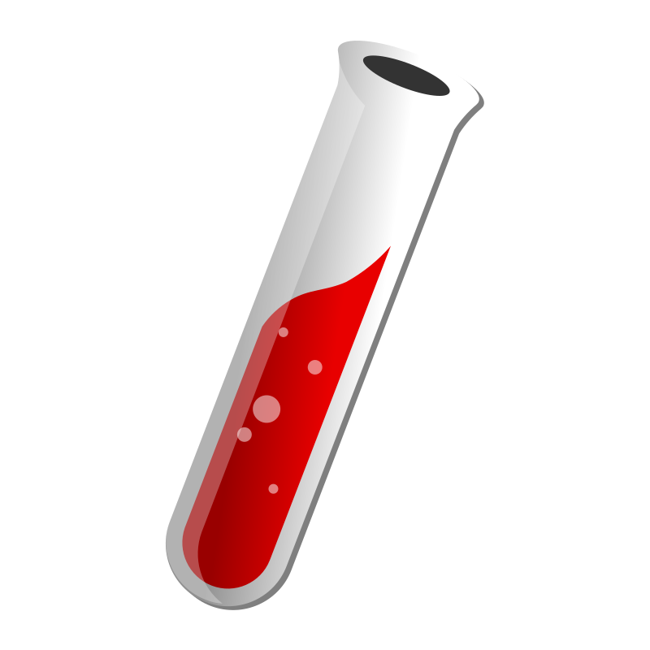
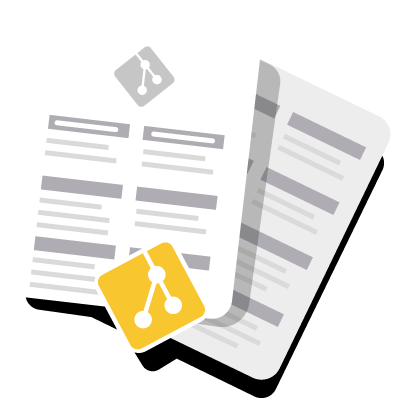

Proyectos
Recetas

📃 Markdown
🌐 Github
📅 May 03, 2024
This repository is designed to provide practical tutorials on various GitHub concepts, ranging from enhancing your GitHub Profile to utilizing GitHub Actions and GitHub Pages.
The primary goal is to offer hands-on learning experiences that empower users to become proficient in GitHub's features effectively.
Online CV
🐍 Python
📃 Mkdocs
📅 Apr 25, 2024
Creating an online resume (CV) with Mkdocs and GitHub Actions offers a modern and efficient way to showcase your professional experience, skills, and achievements to potential employers or collaborators.
Mkdocs, a static site generator, combined with GitHub Actions for automated deployment, provides a seamless workflow for maintaining and updating your online resume with ease.
Data Science
Curriculum Vitae

🦊 Gitlab
📃 Mkdocs
📅 Apr 15, 2024
A continuous Integration Pipeline project to get nice curricula effortlessly (with Gitlab).
Why? I made this toy project as a means to:
- Version my CV
- Automatize the process to update my curriculum
- Learn more about Continuous Integration.
- Learn how to use Gitlab CI/CD Pipelines
Personal Agency Website

🧪 Jekyll
🌐 Github
📅 Apr 05, 2024
Jekyll Agency Bootstrap theme offers a sophisticated and customizable framework for building stunning and functional websites for digital agencies, startups, or any business looking to establish a strong online presence.
By combining the power and flexibility of Jekyll, a static site generator, with the modern design elements and components of the Bootstrap framework, developers can create dynamic and responsive websites with ease.
Data Science project

🐍 Python
🤖 Machine Learning
📅 Feb 20, 2024
This repository serves as a comprehensive framework designed to streamline the process of executing data science projects.
It offers a meticulously structured template that encompasses various phases of project development, from initial data collection to final model deployment.
Data Science Cheat Sheets

🐍 Python
🌐 R-Project
📅 Aug 20, 2023
This repository serves as a hub for various Cheat Sheets related to the field of Data Science (with Python and R). What sets these Cheat Sheets apart is their multidimensional approach to enhancing the learning experience. Each Cheat Sheet is made available in three distinct formats: PDF, Streamlit, and Google Colab.
This threefold approach to guarantee that learners can interact with the content in a manner that aligns with their preferences and learning style.
Note: You can find the repository at the following link: fralfaro/DS-Cheat-Sheets.
Streamlit Examples

🐍 Python
♛ Streamlit
📅 Aug 10, 2023
Streamlit is a Python library that has revolutionized the way data scientists and developers can create interactive web applications with ease.
Unlike complex traditional web development tools, Streamlit focuses on simplicity and efficiency, allowing you to quickly turn your data analysis, visualizations, and models into dynamic and engaging web applications.
Note: This repository is a simplified adaptation of the official documentation in Spanish.
Vizzu Examples
🐍 Python
📶 Vizzu
📅 Aug 10, 2023
Vizzu is a free and open-source animated data visualization library that utilizes a generic data visualization engine to generate various types of charts and seamlessly animate them.
It can be used to create static charts, but more importantly, it's designed to build animated data stories and interactive explorers. Vizzu allows displaying different perspectives of the data that viewers can easily follow due to the animation.
Note: This repository is a simplified adaptation of the official documentation in Spanish.
Python Packages
 Python
Python
Machine Learning Packeges
I contribute as developer/maintainer of the following Python packages:
Fastmatrix

Fast computation of some matrices useful in statistics
Yet another R package for matrices. It contains a small set of functions to fast computation of some matrices and operations useful in statistics.
Note: This repository is an alternative to faosorios/fastmatrix. This repository is just a transformation of packages from R to Python.